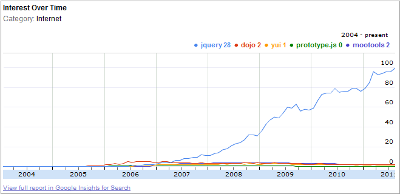
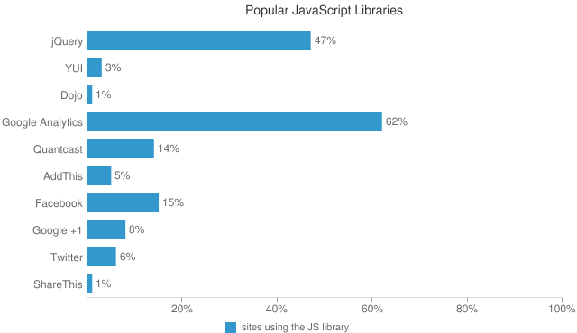
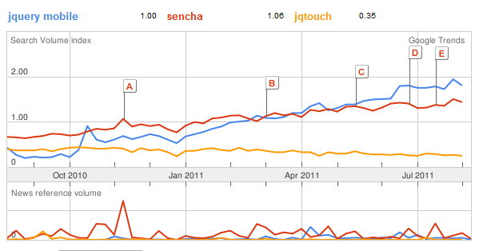

World of Web
Application Frameworks
Haili Zhang
Aug 17, 2011
Haili Zhang
Aug 17, 2011
jQuery is a fast and concise JavaScript Library that simplifies HTML document traversing, event handling, animating, and Ajax interactions for rapid web development. jQuery is designed to change the way that you write JavaScript.


Zepto.js is a minimalist JavaScript framework for mobile WebKit browsers, with a jQuery-compatible syntax.

A unified user interface system across all popular mobile device platforms, built on the rock-solid jQuery and jQuery UI foundation. Its lightweight code is built with progressive enhancement, and has a flexible, easily themeable design.
Sencha Touch allows you to develop mobile web apps that look and feel native on iPhone, Android, and BlackBerry touch devices.
Backbone supplies structure to JavaScript-heavy applications by providing models with key-value binding and custom events, collections with a rich API of enumerable functions, views with declarative event handling...
QUnit is a powerful, easy-to-use, JavaScript test suite. It’s used by the jQuery project to test its code and plugins but is capable of testing any generic JavaScript code...
Jasmine is a behavior-driven development framework for testing your JavaScript code. It does not depend on any other JavaScript frameworks. It does not require a DOM ...
Node.js is an event-driven I/O server-side JavaScript environment based on V8. It is intended for writing scalable network programs such as web servers ...
CoffeeScript is a little language that compiles into JavaScript. CoffeeScript is an attempt to expose the good parts of JavaScript in a simple way. The golden rule of CoffeeScript is: "It's just JavaScript".